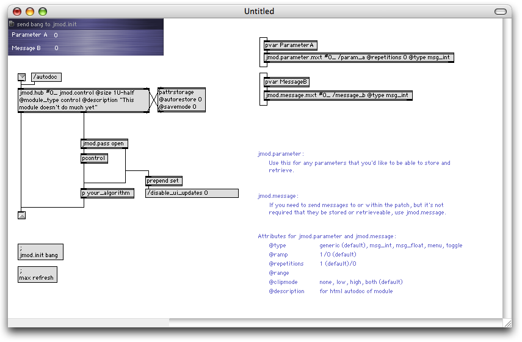
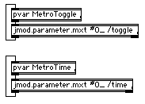
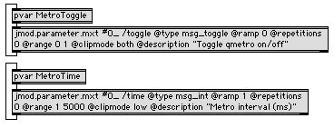
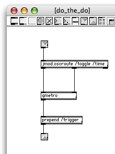
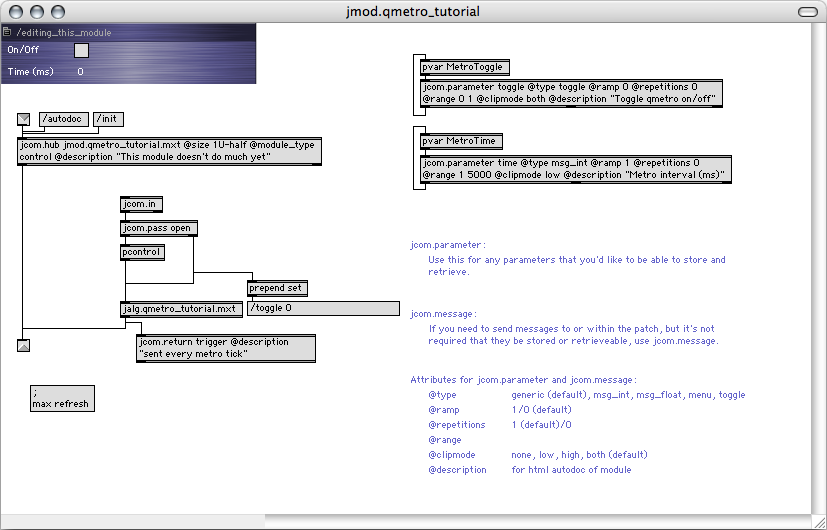
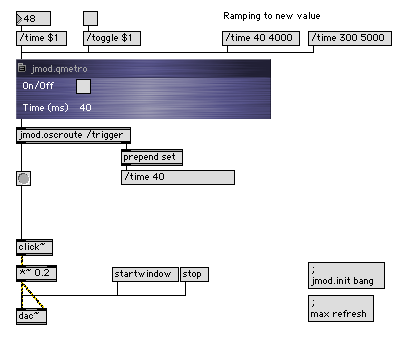

The first module that we'll set out to make, is very simple, and not too exciting. We're basicly going to turn a qmetro object into a Jamoma module. Max-wise this is a very simple patch:

If we analyse what this patch is made up of, we could say that it contains each of the following elements.
In a large patch, when we run out of screen space, the only parts of the patch that we really need to be able to see are the toggle and the number box. These display the parameters and enable us to interact with them. The rest could be hidden away.
The patch has two objects values that we might want to be able to control as parameters:
We might want to know the state of these from a remote location in the patch. We might also want to be able to control these two parameters from a remote location in the patch.
The logic of this patch is really simple. It is all taken care of by one external: qmetro. In larger patches it might be made up of a combination of several externals.
The output is a "bang" message sent on regular intervals from qmetro. In the patch above, a button object is used to display it. However, the button doesn't really have to be there - thus it doesn't have to be a part of the module itself.
As we start transforming the patch above into a Jamoma module, we will be dealing with the GUI, the parameters, the logic, and the output one at a time.
In the Jamoma folder you'll find a file named jmod.template.control.mod (in the documentation/templates folder). Make a copy of this, and rename it as jmod.qmetro.mod.
If you're a Jamoma developer and planning to make the new module a part of the Jamoma package, your new module should be stored in one of the subfolders of library/modules, depending on what kind of module it is. If not, you should find some other dedicated place in the Max search path for your custom modules.
Once you have made yourself a copy and renamed it, open it and take a look:

If your template does not look exactly like this, try clicking on the two message boxes at the lower left of the window (;max refresh and ;jmod.init bang). Sometimes the screen does not display all elements properly when you first load a patch. We believe that this is an issue with bpatcher.
We'll start by creating the interface. If you look in the upper left corner of the patch, there's a small bluish part. When the module is complete, we will be using it as a bpatcher. At that point all we will need to see is this one small region, sized 255 x 60 pixels, or "1U-half" in the Jamoma terminology: One unit tall (60 pixels) and half a unit wide (255 pixels). For more details on various sizes of modules, please refere to the JIG.
For our interface we'll need a toggle and a number box here. We'll also rename the comments so that they make sense to us:

If you want to visually match the number box display to those used for most Jamoma control modules, you can open the inspector for the number box and make the following adjustments:
If not, you can leave it as is.
Parameter handling will mainly be taken care of by a custom Jamoma "component" or abstraction named jmod.parameter. If you don't know what an abstraction is, take a look at Max tutorials 26-28. They discuss how to turn a Max patch into an object.
First we need to get the toggle and number box to communicate with jmod.parameter. We could do so using patch cords (and you are certainly welcome to do so), but that can quickly turn the patch into a pile of spaghetti. For this tutorial, we'll use pvar. If you don't know the pvar object, you should take a look at both the help file and the pdf documentation that comes with Max.
We'll start off by naming the toggle "MetroToggle" and the number box "MetroTime" by selecting one object at a time and choose Name from the Object menu:

Next we create two pvar objects with the arguments "MetroToggle" and "MetroTime" respectively. You can check that the communication between the GUI objects and pvar function by connecting toggles and number boxes to the inlets and outlets of the respective pvars and test:

Now it's time for connecting the pvar objects to jmod.parameter. This is how we'll do it:

Now we're ready for some magic. Try turning the toggle on and off, and change the time in the interface. If everything is working as supposed to, any change you make will cause the message box further down in the patch (connected to the 2nd outlet of jmod.hub) to reflect the parameter change. If you double click the pattrstorage object, it should reflect the current state of the two parameters.
We now need to take a look at the arguments and attributes for jmod.parameter.
Arguments
jmod.parameter has two obligatory arguments:
Jamoma use the OpenSoundControl protocol (or OSC for short) for communication. For this reason, make sure that all of your parameter names starts with a slash, and avoid using the following symbols as part of your parameter names as they are reserved for special purposes:
Slash (/) has a special meaning in OSC-land, and will have to be used accordingly. We'll look into this little by little.
For our module we will name the two parameters /toggle and /time.
Attributes
For each parameter we can set a number of attribtues. Currently the following attributes are implemented:
The template tries to help you remember the various attributes. For our module the following attributes seem sensible:
jmod.parameter.mxt #0_ /toggle:
@type msg_toggle - it's a toggle
@ramp 0 - and it doesn't make sense to let a toggle ramp
@repetitions 0 - neither are repetitions useful
@range 0 1 - this is all the range that we need
@clipmode both - so anything outside the range is clipped
@description "Toggle qmetro on/off"
jmod.parameter.mxt #0_ /time:
@type msg_int
@ramp 1 - can be useful for accelerando and ritardando
@repetitions 0 - repetitions won't make any differences
to the output, so we might just as well filter them out
@range 1 5000 - most of the time the metro will be fired
within this time interval
@clipmode low - but we don't want to prevent it from being
a higher value
@description "Metro interval (ms)"
Now this part of the patch looks like this:

Before we move on to creating the logic, it's worth noting that jmod.parameter is quite powerful. In addition tokeeping track of the current state of the parameter, it can be used for ramping to new values, clipping the range and filtering out repetitions.
On a sidenote you might have noted that we always load the component as "jmod.parameter.mxt". You can load it as "jmod.parameter" and it would work fine as well. We've found that adding the file extensions for abstractions in Max tends to substantially speed up the amount of time it takes to load patches (as of MaxMSP 4.5.4).
The logic part of the patch, the stuff that's actual doing the work, will be tucked away in a subpatch. In the template the subpatch is named "DoTheDo", but you might want to change that for something more sensible.
You might have noticed that the 2nd outlet of jmod.hub sends out messages of the kind "/time 40" or "/toggle 1" as you change values in the GUI. In Jamoma, you won't be passing numbers, bangs or similar on their own. They will always be OpenSoundControl messages starting with a symbol telling what parameter the value is meant for. For this reason we need some routing inside DoTheDo. Instead of the standard Max route object, we will use jmod.oscroute, as it adds a number of useful OpenSoundControl-related functionalities.

For the same reason we will not be passing the bangs straight on, but prepend a symbol to tag the data with a meaningful name. In this case we have chosen the symbol "/trigger". Again note that the symbol starts with a slash.
There's a few more tasks to carry out before we're done.
First we sant to change the displayed name of the module from jmod.control to jmod.qmetro. This we do by changing the 2nd argument of jmod.hub to "jmod.qmetro". In addition we'll change the description attribute for jmod.hub.
If you want you can connect the outlet of DoTheDo to a button to check that the patch is working.

Next we want to provide a default preset for the module. First click the ";jmod.init bang" message box so that the module is properly initialised. Then set time to 40 and the toggle to off, and select "Save Settings..." from the small pop-up menu in the left upper corner of the module GUI. Save the preset as "jmod.qmetro.xml" somewhere in the Max search path. Presets for standard Jamoma modules can be found in the Jamoma library/presets folder.
If you want to, you can also auto-generate HTML documentation for the patch. Simply click the /autodoc message box above jmod.hub. Save as "jmod.qmetro.html" somewhere in Max's searchpath. The documentation should look something like this.
Before you start testing, make sure to remove the pre-existing jmod.qmetro.mod that we created from the library/modules/control folder. That way you can be sure that you will be testing your module and not the one that comes as part of the standard Jamoma package.
Save and close your module patch, and create a new patch. Create a bpatcher object, and in the inspecter, type "jmod.qmetro.mod". Resize the bpatcher to 255x60 pixels. Add a few more objects as shown below:

Click ";jmod.init bang" to initialise, and if the display is not looking as it is supposed to, refresh the screen by clicking ";max refresh".
If you interact with the toggle and time number box in the module, you'll see that updated values are reported from the outlet of the module. You can also update the parameters by sending messages from outside of the module. If you turn on audio in the patch, you'll be able to listen to the result as time ramps from one value to another.
A Jamoma module can be thought of as being made up of three parts:
A number of Jamoma components collaborate to make it all work together: